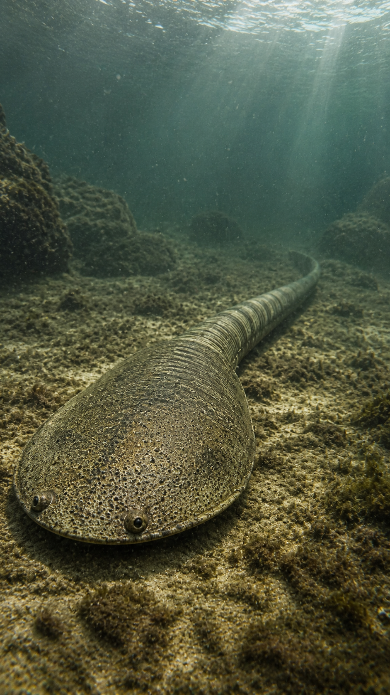
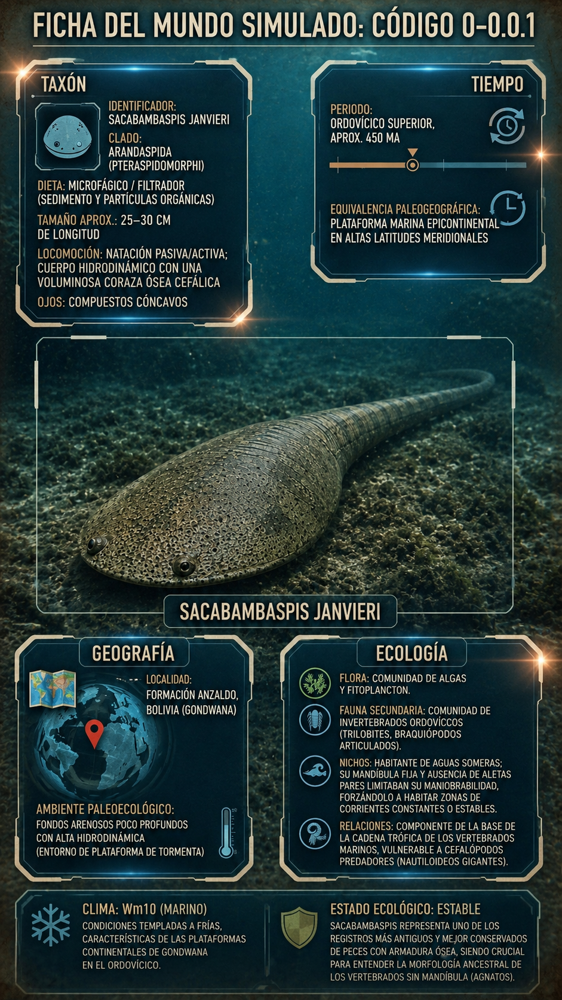
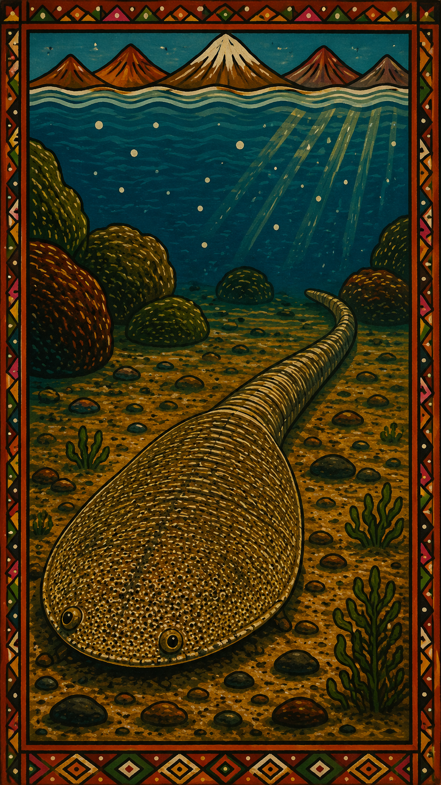
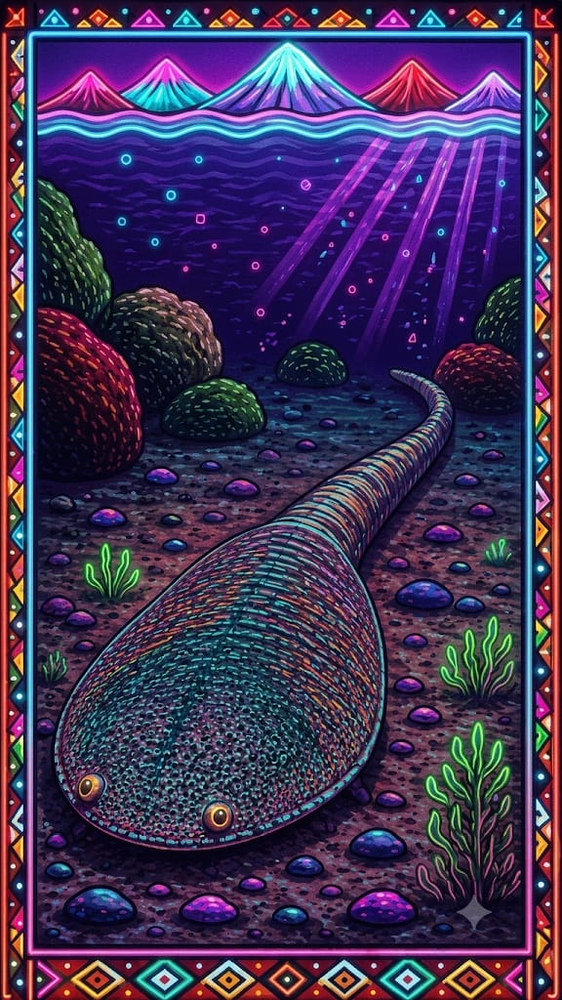

Paleoficha de PalEntropía




TAXÓN:
Sacabambaspis janvieri
CLADO:
Arandaspida (Pteraspidomorphi)
DIETA:
Microfágico / Filtrador (sedimento y partículas orgánicas)
TAMAÑO:
Aproximadamente 25–30 cm de longitud.
LOCOMOCIÓN:
Natación pasiva/activa; cuerpo hidrodinámico protegido por una voluminosa coraza ósea cefálica.
TIEMPO:
Ordovícico Superior, aproximadamente hace 450 millones de años.
GEOGRAFÍA:
Formación Anzaldo, Bolivia (Paleocontinente Gondwana).
EQUIVALENCIA PALEOGEOGRÁFICA:
Plataforma marina epicontinental en altas latitudes meridionales.
AMBIENTE PALEAOECOLÓGICO:
Fondos arenosos poco profundos sometidos a corrientes y tormentas.
ECOLOGÍA:
• Flora: Comunidades de algas y abundante fitoplancton marino.
• Fauna secundaria: Trilobites, braquiópodos articulados y otros invertebrados característicos del Ordovícico.
• Nichos: Habitante de aguas someras que obtenía alimento filtrando sedimentos y partículas orgánicas transportadas por las corrientes.
• Relaciones: Integrante de los primeros niveles tróficos de los vertebrados, vulnerable a grandes cefalópodos nautiloideos depredadores.
CLIMA:
Wm10 (Marino). Condiciones templadas a frías características de las plataformas continentales de Gondwana durante el Ordovícico.
ESTADO ECOLÓGICO:
Estable. Sacabambaspis representa uno de los peces acorazados sin mandíbula más antiguos y mejor conocidos, siendo una pieza clave para comprender la evolución temprana de los vertebrados.